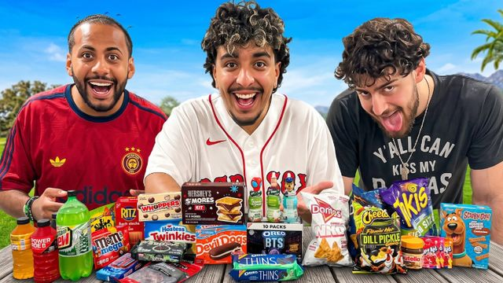
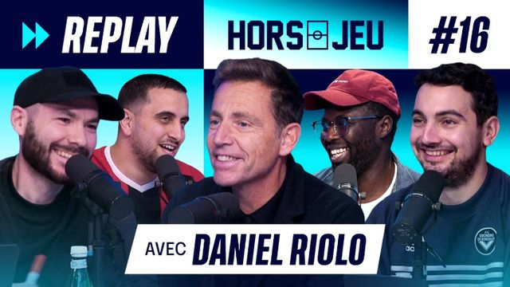
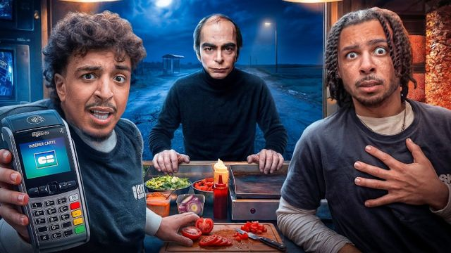
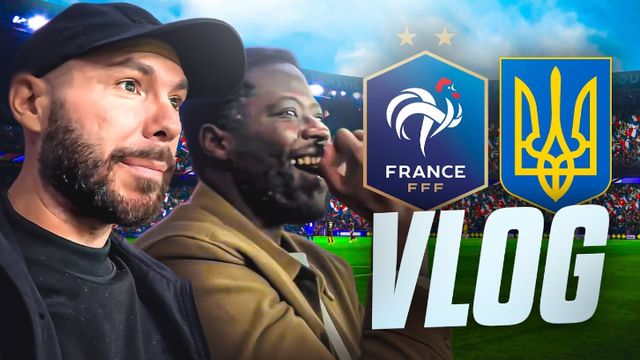
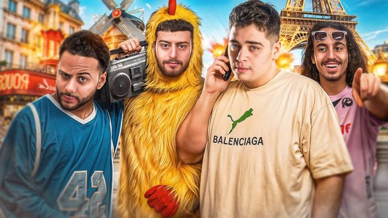
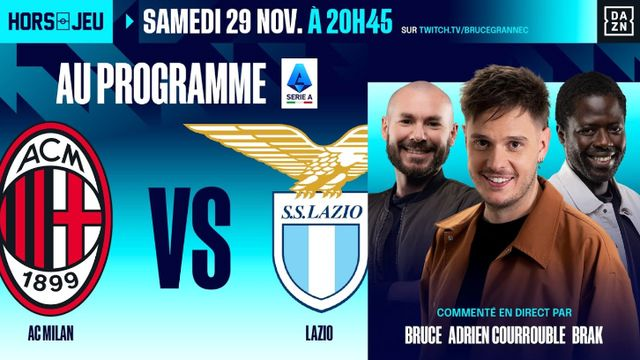
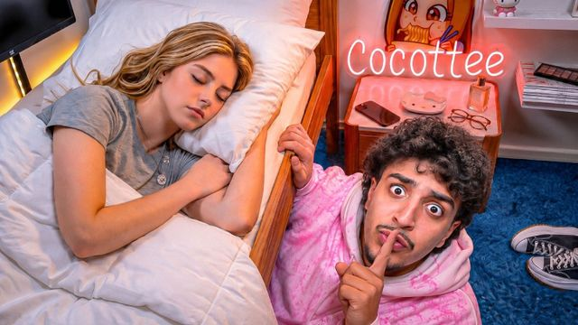
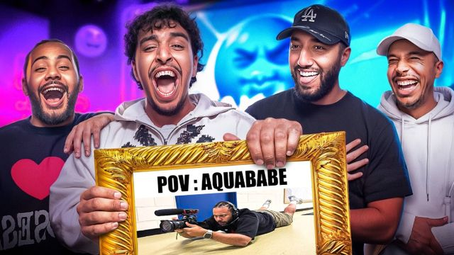
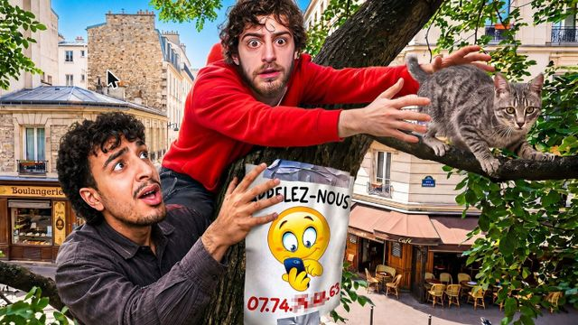

Passé par Webedia, je dirige aujourd'hui les opérations de plusieurs créateurs de contenu. Des vidéos YouTube à plusieurs millions de vues, des lives suivis par près de 100 000 personnes en même temps, une émission foot produite toute une saison. Ce qui fait grandir un créateur peut aussi faire grandir une entreprise.

PGM · Flamby JR · USA
Hors-Jeu · Riolo
Flamby
France - Ukraine
KametoJ'ai produit l'émission foot de Bruce Grannec et Brak toute la saison, de la reprise du 18 août 2025 jusqu'aux Awards de la Coupe du monde le 20 juillet 2026. En plus des émissions, je gérais les réseaux sociaux (Instagram, TikTok, X), les rediffusions et les vidéos YouTube.

2:55:50J'organise les tournages, je coordonne les équipes et les invités, je suis le montage jusqu'à la mise en ligne, et je gère les partenariats avec les marques.

40:12
31:10
27:08La deuxième chaîne, avec un rythme de sortie bien plus soutenu : plus de 50 vidéos depuis mars 2026. Je pilote le planning, les monteurs et les sorties.
Des lives en extérieur, en direct, avec beaucoup de monde devant l'écran. Repérages, logistique, timing, invités et sécurité du tournage : tout doit tenir, sans possibilité de refaire la prise.
Les partenariats intégrés aux vidéos et aux émissions que j'ai pilotées. Chaque carte renvoie vers la vidéo où la collaboration apparaît.
Les mêmes méthodes que pour les créateurs, adaptées à votre activité, à votre temps et à votre budget.
On fait le point sur vos réseaux : ce qui marche, ce qui ne sert à rien, et les formats qui peuvent vous ramener des clients.
Idées, tournage, montage et publication de vidéos courtes pour Instagram et TikTok, avec un planning qui tient dans la durée.
Si vous préférez gérer vous-même, je vous laisse une méthode simple : quoi filmer, quand publier, et comment mesurer.
Je vous donne une première idée concrète pour votre entreprise, et on voit ensemble si un accompagnement a du sens.